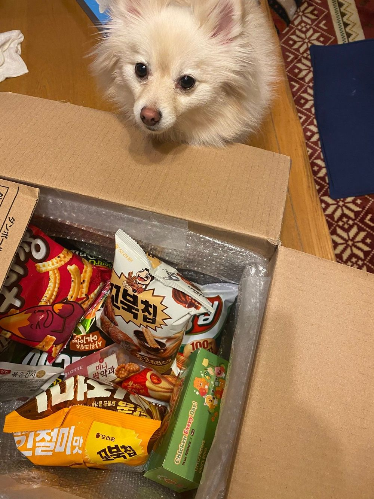
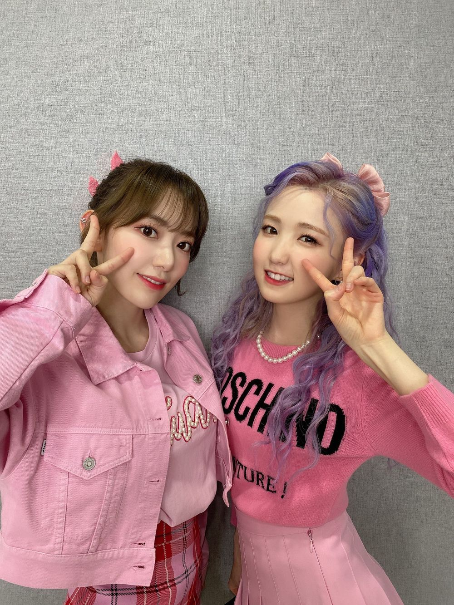

わあぁぁぁ
ひいだよ🍓

前にお母さんにお菓子送ってあげたら
こんな写真と一緒に来た笑
今日はやく起きたんだけど
いろんなことしてたらこんな時間になってた😳
遅くなってごめんなさい🙏🏻💦
이호はどんな土曜日を過ごしましたか〜？？
そういえば今日は
アプリコットヌードをつけました👀
あっカラコンの話ね！！
この色本当に自然すぎて
いい意味でカラコン感なくて使いやすい🥺
今度メイクした日写真撮るね😂
昨日メイクしたのに
なんで写真撮らなかったんだぁぁぁあ
最近はメイクするとき
毎日違うメイクをするんだ💄
前はブラウンのアイライナー使ってたんだけど
ブラックも挑戦してみたり。。
でもブラックは
少しでもはみ出ちゃったりすると
すごく目立つからいつも使うとき緊張する🥲
メイク上手になりたい。。
から最近は寝る前にASMRの動画より
メイクの動画見てるよ😂😂😂
そういう動画見てると
メイク道具どんどん買いたくなる…笑
でも今月は節約する月と決めたので←
決意したら頑張れるタイプなので
今月頑張ります💪🏻笑笑
ではまたっ
우아아아아아ㅏㅏ
미안해ㅜ
나 자고 있었던 것도 아니고
까먹고 있었던거 아니야!!!
메일 해야지 해야지 했었는데...
오늘은 좀 할일이 많았어ㅜ
내일은 많이 보낼께 ><
TMI💡
배가 안 고프네...
오늘은 저녁 못 먹을 것 같아😶
추천메뉴는...
이제 늦었으니까 내일 아침밥 추천!!
음~ 🥚드랍!!!ㅎㅎㅎ
계속 먹어보고 싶었는데 한번도 안 먹어봤다...
슬기로운 의사생활에서 우주가
진짜 맛있게 먹고 있었는데ㅠㅠㅠㅠ
올해 슬기로운 의사생활 언제 나와ㅠㅠㅠ
빨리 보고 싶어어ㅓㅓ🥺

明日はメールたくさんする😢😢😢
ばいばーい👋🏻
ひいまる🥟